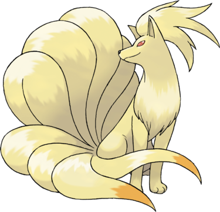

Feunard est un grand renard couleur crème. Il est inspiré d'une créature légendaire, le renard à neuf queues (kyūbi no kitsune en japonais). Il possède neuf queues épaisses à l'extrémité orange et possédant des pouvoirs mystiques qui lui procurent notamment une longévité de 1 000 ans